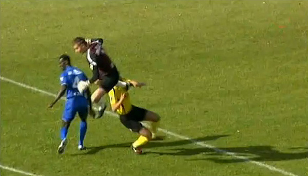
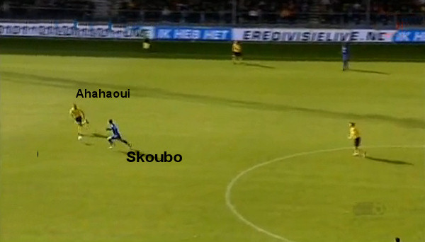
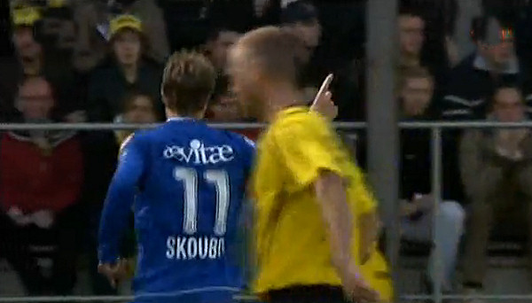
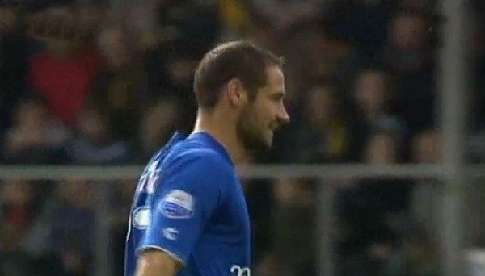
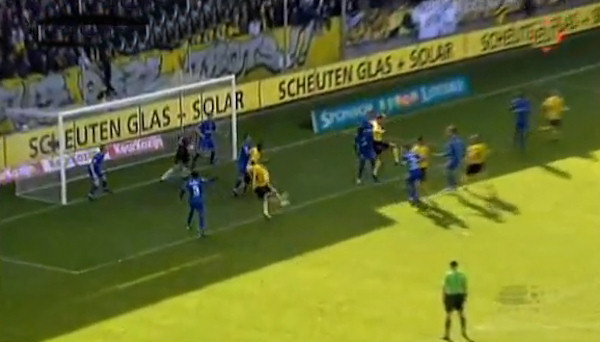
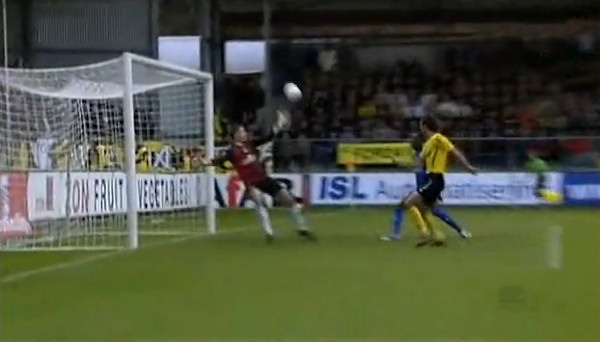

Botsing tussen Castro en Calabro.

Geklungel in de Venlose defensie brengt de bal bij Skoubo die Ahahaoui
omspeelt en de bal vervolgens
over Begois stift: 0-1, (34').

Het eerste doelpunt van Morten Skoubo in dienst van Roda.

Begin tweede helft wordt een keihard afstandsschot van Bodor ternauwernood
uit het doel geslagen
door Begois.

Uit een hoekschop scoort Leemans de gelijkmaker: 1-1, (61').

In de extra tijd scoort Calabro bijna nog raak. Het blijft 1-1.
VVV verzuimde om de beladen Limburgse derby tegen Roda JC eindelijk weer
eens te winnen. De
thuisploeg kreeg na rust een handvol kansen om de tweede zege van het
seizoen te boeken, maar alleen
Ken Leemans (oud-speler van Roda JC) trof doel. Hij bezorgde daarmee VVV wel
het zevende gelijkspel
in tien duels.
VVV en Roda JC konden het uitverkochte stadion De Koel voor rust niet
boeien. Het behoudende spel
leidde slechts sporadisch tot opwindende momenten. Er moest dan ook een fout
aan te pas komen
om de score te openen. De Venlose middenvelder Achmed Ahahaoui speelde in de
35ste minuut verkeerd
terug, Roda-spits Morten Skoubo pikte de bal dankbaar op en rondde met een
knappe stift af: 0-1.
Roda JC, dat aanvoerder Davy de Fauw opofferde om de Venlose smaakmaker
Keisuke Honda te
schaduwen, kreeg vlak voor rust zelfs de kans om de voorsprong te
verdubbelen. Doelman Kevin Begois
behoedde VVV echter voor een vroege knock-out. Dat deed hij ook meteen na
rust, op een afstandsschot
van Boldiszar Bodor.
Daarna was het VVV dat het spel dicteerde. De ploeg van trainer Jan van
Dijk, ooit na vijf duels
ontslagen bij Roda JC, ging furieus op zoek naar de gelijkmaker. Het
offensief leidde tot een reeks
kansen (Honda, Calabro, Schaken) en de gelijkmaker van Leemans, die na ruim
een uur spelen van
dichtbij binnen tikte: 1-1. Roda JC wankelde en had geluk dat Sandro Calabro
in de slotseconden van
dichtbij over tikte. Een dure misser voor de Venlose ploeg, die daardoor
opnieuw niet verder kwam dan
een gelijkspel.